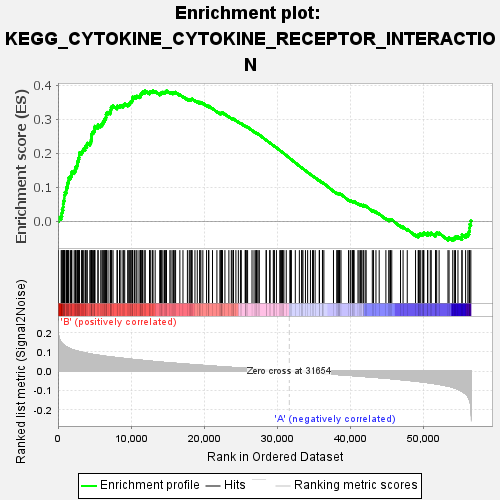
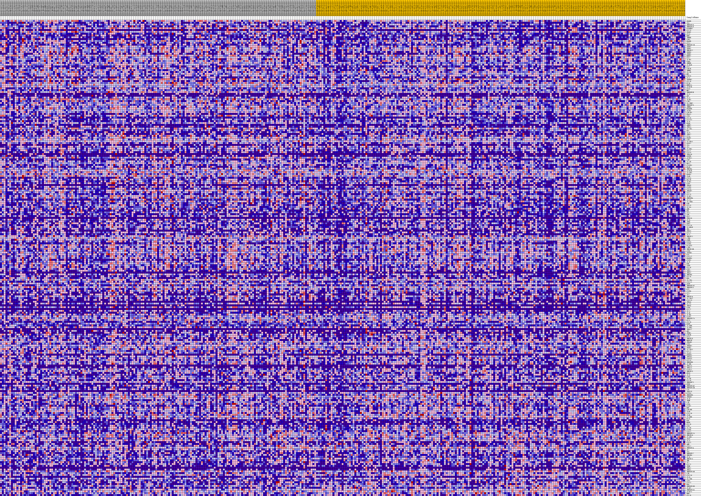
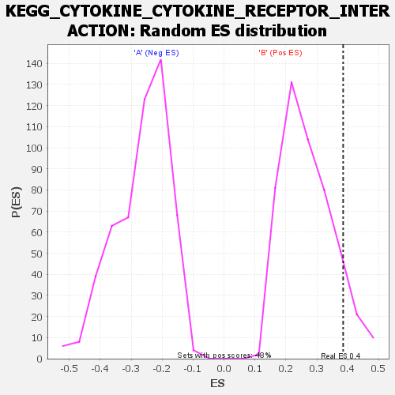

| | | Dataset | my.my.cls#B_versus_A.my.cls#B_versus_A_repos |
| Phenotype | my.cls#B_versus_A_repos |
| Upregulated in class | B |
| GeneSet | KEGG_CYTOKINE_CYTOKINE_RECEPTOR_INTERACTION |
| Enrichment Score (ES) | 0.38516635 |
| Normalized Enrichment Score (NES) | 1.432629 |
| Nominal p-value | 0.09583333 |
| FDR q-value | 0.5472919 |
| FWER p-Value | 0.834 |
Table: GSEA Results Summary

Fig 1: Enrichment plot: KEGG_CYTOKINE_CYTOKINE_RECEPTOR_INTERACTION
Profile of the Running ES Score & Positions of GeneSet Members on the Rank Ordered List
| SYMBOL | TITLE | RANK IN GENE LIST | RANK METRIC SCORE | RUNNING ES | CORE ENRICHMENT | | 1 | VEGFB | na | 65 | 0.187 | 0.0121 | Yes |
| 2 | IL6 | na | 434 | 0.148 | 0.0162 | Yes |
| 3 | TNFRSF18 | na | 535 | 0.144 | 0.0247 | Yes |
| 4 | TNFRSF19 | na | 570 | 0.143 | 0.0342 | Yes |
| 5 | PLEKHO2 | na | 693 | 0.138 | 0.0419 | Yes |
| 6 | CCL25 | na | 713 | 0.138 | 0.0514 | Yes |
| 7 | VEGFC | na | 748 | 0.137 | 0.0605 | Yes |
| 8 | CD70 | na | 865 | 0.133 | 0.0680 | Yes |
| 9 | BMP7 | na | 867 | 0.133 | 0.0774 | Yes |
| 10 | INHBB | na | 942 | 0.131 | 0.0855 | Yes |
| 11 | CSF3 | na | 1133 | 0.127 | 0.0911 | Yes |
| 12 | PDGFB | na | 1154 | 0.126 | 0.0998 | Yes |
| 13 | CCL3 | na | 1300 | 0.123 | 0.1060 | Yes |
| 14 | TNFRSF11B | na | 1327 | 0.123 | 0.1142 | Yes |
| 15 | TGFB2 | na | 1457 | 0.120 | 0.1205 | Yes |
| 16 | TGFB1 | na | 1477 | 0.120 | 0.1287 | Yes |
| 17 | TNFSF12 | na | 1719 | 0.116 | 0.1327 | Yes |
| 18 | TGFB3 | na | 1848 | 0.114 | 0.1385 | Yes |
| 19 | IFNW1 | na | 1902 | 0.113 | 0.1456 | Yes |
| 20 | BMPR2 | na | 2212 | 0.109 | 0.1478 | Yes |
| 21 | CCL2 | na | 2355 | 0.107 | 0.1529 | Yes |
| 22 | IL2RA | na | 2399 | 0.107 | 0.1598 | Yes |
| 23 | CD40 | na | 2579 | 0.105 | 0.1641 | Yes |
| 24 | INHBE | na | 2646 | 0.104 | 0.1703 | Yes |
| 25 | IL1RAP | na | 2690 | 0.103 | 0.1769 | Yes |
| 26 | CCL7 | na | 2797 | 0.103 | 0.1823 | Yes |
| 27 | CSF1R | na | 2866 | 0.102 | 0.1883 | Yes |
| 28 | INHBC | na | 2916 | 0.101 | 0.1947 | Yes |
| 29 | IL17B | na | 2921 | 0.101 | 0.2018 | Yes |
| 30 | MPL | na | 3212 | 0.099 | 0.2037 | Yes |
| 31 | CCR10 | na | 3364 | 0.097 | 0.2079 | Yes |
| 32 | IL11 | na | 3465 | 0.097 | 0.2130 | Yes |
| 33 | TGFBR2 | na | 3709 | 0.095 | 0.2155 | Yes |
| 34 | CCL18 | na | 3753 | 0.094 | 0.2214 | Yes |
| 35 | FLT4 | na | 3949 | 0.093 | 0.2246 | Yes |
| 36 | BMPR1A | na | 4000 | 0.092 | 0.2302 | Yes |
| 37 | ACVR2B | na | 4359 | 0.090 | 0.2303 | Yes |
| 38 | CCL8 | na | 4495 | 0.089 | 0.2342 | Yes |
| 39 | MET | na | 4533 | 0.089 | 0.2399 | Yes |
| 40 | TNFRSF1B | na | 4593 | 0.088 | 0.2451 | Yes |
| 41 | IL25 | na | 4599 | 0.088 | 0.2513 | Yes |
| 42 | GH2 | na | 4608 | 0.088 | 0.2574 | Yes |
| 43 | IL13 | na | 4710 | 0.087 | 0.2619 | Yes |
| 44 | IL3RA | na | 4876 | 0.086 | 0.2651 | Yes |
| 45 | CTF1 | na | 5010 | 0.086 | 0.2688 | Yes |
| 46 | IL12RB2 | na | 5015 | 0.086 | 0.2748 | Yes |
| 47 | TNFRSF25 | na | 5056 | 0.085 | 0.2802 | Yes |
| 48 | INHBA | na | 5469 | 0.083 | 0.2788 | Yes |
| 49 | PDGFRB | na | 5494 | 0.083 | 0.2842 | Yes |
| 50 | ACVR1 | na | 5858 | 0.081 | 0.2835 | Yes |
| 51 | CSF2RA | na | 6021 | 0.080 | 0.2863 | Yes |
| 52 | PF4V1 | na | 6153 | 0.079 | 0.2896 | Yes |
| 53 | CCR1 | na | 6191 | 0.079 | 0.2946 | Yes |
| 54 | CCL16 | na | 6335 | 0.078 | 0.2976 | Yes |
| 55 | CCL3L3 | na | 6416 | 0.078 | 0.3017 | Yes |
| 56 | IL24 | na | 6534 | 0.077 | 0.3051 | Yes |
| 57 | EPOR | na | 6581 | 0.077 | 0.3098 | Yes |
| 58 | AMHR2 | na | 6586 | 0.077 | 0.3152 | Yes |
| 59 | IFNL3 | na | 6659 | 0.076 | 0.3193 | Yes |
| 60 | IL11RA | na | 6854 | 0.075 | 0.3212 | Yes |
| 61 | EDA | na | 7144 | 0.074 | 0.3214 | Yes |
| 62 | IL1A | na | 7221 | 0.074 | 0.3253 | Yes |
| 63 | IFNL2 | na | 7246 | 0.074 | 0.3301 | Yes |
| 64 | CCL4 | na | 7276 | 0.074 | 0.3348 | Yes |
| 65 | PDGFC | na | 7359 | 0.073 | 0.3386 | Yes |
| 66 | CSF1 | na | 7540 | 0.072 | 0.3405 | Yes |
| 67 | IL13RA1 | na | 8087 | 0.070 | 0.3358 | Yes |
| 68 | CRLF2 | na | 8130 | 0.070 | 0.3400 | Yes |
| 69 | IL9 | na | 8425 | 0.068 | 0.3397 | Yes |
| 70 | IL5 | na | 8608 | 0.068 | 0.3412 | Yes |
| 71 | IL10RA | na | 8898 | 0.066 | 0.3408 | Yes |
| 72 | CCL17 | na | 8998 | 0.066 | 0.3438 | Yes |
| 73 | CXCL9 | na | 9140 | 0.065 | 0.3459 | Yes |
| 74 | IFNA14 | na | 9544 | 0.064 | 0.3433 | Yes |
| 75 | CNTFR | na | 9689 | 0.063 | 0.3452 | Yes |
| 76 | ACVRL1 | na | 9834 | 0.062 | 0.3471 | Yes |
| 77 | CSF2 | na | 9877 | 0.062 | 0.3508 | Yes |
| 78 | IL21R | na | 9990 | 0.062 | 0.3532 | Yes |
| 79 | RELT | na | 10121 | 0.061 | 0.3553 | Yes |
| 80 | CX3CR1 | na | 10190 | 0.061 | 0.3584 | Yes |
| 81 | EDAR | na | 10210 | 0.061 | 0.3624 | Yes |
| 82 | TNFSF4 | na | 10253 | 0.061 | 0.3660 | Yes |
| 83 | ACVR1B | na | 10485 | 0.060 | 0.3662 | Yes |
| 84 | IL15RA | na | 10686 | 0.059 | 0.3668 | Yes |
| 85 | PDGFA | na | 10814 | 0.059 | 0.3687 | Yes |
| 86 | IL4R | na | 11100 | 0.058 | 0.3678 | Yes |
| 87 | CXCL6 | na | 11282 | 0.057 | 0.3686 | Yes |
| 88 | EDA2R | na | 11298 | 0.057 | 0.3724 | Yes |
| 89 | IL5RA | na | 11368 | 0.057 | 0.3752 | Yes |
| 90 | CCR5 | na | 11471 | 0.056 | 0.3774 | Yes |
| 91 | IFNA8 | na | 11585 | 0.056 | 0.3794 | Yes |
| 92 | CXCR3 | na | 11628 | 0.056 | 0.3826 | Yes |
| 93 | CXCL8 | na | 11913 | 0.055 | 0.3815 | Yes |
| 94 | IFNAR2 | na | 11924 | 0.055 | 0.3852 | Yes |
| 95 | XCL2 | na | 12533 | 0.052 | 0.3781 | No |
| 96 | CCL23 | na | 12556 | 0.052 | 0.3814 | No |
| 97 | IL1R1 | na | 12699 | 0.052 | 0.3826 | No |
| 98 | TNFRSF4 | na | 12929 | 0.051 | 0.3822 | No |
| 99 | IL17A | na | 13016 | 0.051 | 0.3842 | No |
| 100 | IL12RB1 | na | 13310 | 0.050 | 0.3826 | No |
| 101 | OSM | na | 13934 | 0.047 | 0.3749 | No |
| 102 | CCL13 | na | 14040 | 0.047 | 0.3764 | No |
| 103 | IL23A | na | 14129 | 0.047 | 0.3781 | No |
| 104 | GHR | na | 14216 | 0.046 | 0.3799 | No |
| 105 | PRL | na | 14378 | 0.046 | 0.3803 | No |
| 106 | XCL1 | na | 14593 | 0.045 | 0.3798 | No |
| 107 | LEP | na | 14695 | 0.045 | 0.3812 | No |
| 108 | CD27 | na | 14798 | 0.045 | 0.3825 | No |
| 109 | IFNA16 | na | 14861 | 0.044 | 0.3846 | No |
| 110 | IL26 | na | 15324 | 0.043 | 0.3794 | No |
| 111 | IFNG | na | 15482 | 0.042 | 0.3797 | No |
| 112 | GDF5 | na | 15741 | 0.042 | 0.3781 | No |
| 113 | CXCL10 | na | 15812 | 0.041 | 0.3798 | No |
| 114 | IL18RAP | na | 15991 | 0.041 | 0.3795 | No |
| 115 | TPO | na | 16109 | 0.041 | 0.3803 | No |
| 116 | IFNA5 | na | 16693 | 0.039 | 0.3728 | No |
| 117 | CCL11 | na | 17119 | 0.038 | 0.3679 | No |
| 118 | IL22 | na | 17725 | 0.036 | 0.3597 | No |
| 119 | TNFSF11 | na | 17972 | 0.035 | 0.3578 | No |
| 120 | LTBR | na | 18087 | 0.035 | 0.3583 | No |
| 121 | OSMR | na | 18213 | 0.035 | 0.3585 | No |
| 122 | FASLG | na | 18302 | 0.034 | 0.3594 | No |
| 123 | CXCR5 | na | 18380 | 0.034 | 0.3605 | No |
| 124 | FLT3LG | na | 18760 | 0.033 | 0.3561 | No |
| 125 | LIFR | na | 19077 | 0.032 | 0.3528 | No |
| 126 | TNFSF13B | na | 19416 | 0.031 | 0.3490 | No |
| 127 | CCR8 | na | 19435 | 0.031 | 0.3509 | No |
| 128 | TGFBR1 | na | 19572 | 0.031 | 0.3507 | No |
| 129 | FAS | na | 19843 | 0.030 | 0.3480 | No |
| 130 | CXCL12 | na | 20351 | 0.029 | 0.3410 | No |
| 131 | PDGFRA | na | 20618 | 0.028 | 0.3383 | No |
| 132 | CXCR1 | na | 20669 | 0.028 | 0.3394 | No |
| 133 | IL7R | na | 21164 | 0.026 | 0.3325 | No |
| 134 | KDR | na | 21767 | 0.025 | 0.3236 | No |
| 135 | LEPR | na | 22177 | 0.024 | 0.3180 | No |
| 136 | CCL14 | na | 22308 | 0.023 | 0.3174 | No |
| 137 | CCR2 | na | 22332 | 0.023 | 0.3186 | No |
| 138 | IFNL1 | na | 22403 | 0.023 | 0.3191 | No |
| 139 | IFNA2 | na | 22431 | 0.023 | 0.3202 | No |
| 140 | TNFSF8 | na | 22531 | 0.023 | 0.3201 | No |
| 141 | CCL24 | na | 22865 | 0.022 | 0.3157 | No |
| 142 | EPO | na | 23407 | 0.021 | 0.3076 | No |
| 143 | IL17RA | na | 23739 | 0.020 | 0.3031 | No |
| 144 | CXCL11 | na | 23848 | 0.019 | 0.3026 | No |
| 145 | CNTF | na | 24036 | 0.019 | 0.3006 | No |
| 146 | TNFRSF13C | na | 24041 | 0.019 | 0.3019 | No |
| 147 | TNFRSF1A | na | 24369 | 0.018 | 0.2974 | No |
| 148 | KIT | na | 24704 | 0.017 | 0.2927 | No |
| 149 | CXCR6 | na | 24992 | 0.017 | 0.2888 | No |
| 150 | CCL1 | na | 25108 | 0.016 | 0.2879 | No |
| 151 | IL3 | na | 25642 | 0.015 | 0.2795 | No |
| 152 | TNFSF14 | na | 25677 | 0.015 | 0.2799 | No |
| 153 | IL22RA2 | na | 25716 | 0.015 | 0.2803 | No |
| 154 | CXCL13 | na | 25850 | 0.014 | 0.2790 | No |
| 155 | IFNA6 | na | 25972 | 0.014 | 0.2778 | No |
| 156 | IL12A | na | 26577 | 0.012 | 0.2680 | No |
| 157 | IFNA4 | na | 26855 | 0.012 | 0.2639 | No |
| 158 | CCR4 | na | 27076 | 0.011 | 0.2608 | No |
| 159 | CCL27 | na | 27192 | 0.011 | 0.2595 | No |
| 160 | IL21 | na | 27259 | 0.011 | 0.2591 | No |
| 161 | IL1B | na | 27408 | 0.010 | 0.2572 | No |
| 162 | IL2RG | na | 27577 | 0.010 | 0.2549 | No |
| 163 | CLCF1 | na | 28511 | 0.008 | 0.2389 | No |
| 164 | TNFRSF12A | na | 28537 | 0.008 | 0.2390 | No |
| 165 | FLT1 | na | 28999 | 0.006 | 0.2313 | No |
| 166 | CCL20 | na | 29051 | 0.006 | 0.2309 | No |
| 167 | EGFR | na | 29493 | 0.005 | 0.2234 | No |
| 168 | IL20RB | na | 29591 | 0.005 | 0.2221 | No |
| 169 | IL20RA | na | 29637 | 0.005 | 0.2216 | No |
| 170 | IFNA17 | na | 29922 | 0.004 | 0.2169 | No |
| 171 | GH1 | na | 30380 | 0.003 | 0.2090 | No |
| 172 | IFNB1 | na | 30493 | 0.003 | 0.2072 | No |
| 173 | CSF3R | na | 30624 | 0.002 | 0.2051 | No |
| 174 | CCL5 | na | 30756 | 0.002 | 0.2029 | No |
| 175 | TNFSF18 | na | 30825 | 0.002 | 0.2018 | No |
| 176 | BMPR1B | na | 30947 | 0.002 | 0.1998 | No |
| 177 | IFNAR1 | na | 31266 | 0.001 | 0.1942 | No |
| 178 | CCR3 | na | 31761 | -0.000 | 0.1855 | No |
| 179 | IFNGR2 | na | 31848 | -0.000 | 0.1840 | No |
| 180 | VEGFA | na | 31973 | -0.001 | 0.1818 | No |
| 181 | IL22RA1 | na | 32507 | -0.002 | 0.1725 | No |
| 182 | CCL22 | na | 33062 | -0.003 | 0.1629 | No |
| 183 | IL6ST | na | 33372 | -0.004 | 0.1577 | No |
| 184 | PPBPP1 | na | 33425 | -0.004 | 0.1571 | No |
| 185 | IFNLR1 | na | 33555 | -0.005 | 0.1552 | No |
| 186 | CD40LG | na | 33898 | -0.005 | 0.1495 | No |
| 187 | CCL15 | na | 34196 | -0.006 | 0.1447 | No |
| 188 | TNFRSF8 | na | 34580 | -0.007 | 0.1384 | No |
| 189 | IL2RB | na | 34869 | -0.008 | 0.1338 | No |
| 190 | IFNA13 | na | 34989 | -0.008 | 0.1323 | No |
| 191 | IFNA21 | na | 35223 | -0.009 | 0.1288 | No |
| 192 | CX3CL1 | na | 35784 | -0.010 | 0.1196 | No |
| 193 | TNFSF15 | na | 35821 | -0.010 | 0.1197 | No |
| 194 | PRLR | na | 36227 | -0.011 | 0.1133 | No |
| 195 | IL20 | na | 36243 | -0.011 | 0.1139 | No |
| 196 | CCR9 | na | 36421 | -0.012 | 0.1116 | No |
| 197 | IL23R | na | 37737 | -0.015 | 0.0893 | No |
| 198 | CCL19 | na | 38194 | -0.016 | 0.0824 | No |
| 199 | TNFRSF21 | na | 38250 | -0.017 | 0.0826 | No |
| 200 | PPBP | na | 38370 | -0.017 | 0.0817 | No |
| 201 | TNFRSF10C | na | 38447 | -0.017 | 0.0816 | No |
| 202 | TNFRSF13B | na | 38577 | -0.017 | 0.0806 | No |
| 203 | LTA | na | 38585 | -0.018 | 0.0817 | No |
| 204 | IFNA10 | na | 38765 | -0.018 | 0.0798 | No |
| 205 | KITLG | na | 39796 | -0.021 | 0.0630 | No |
| 206 | TNFRSF9 | na | 40026 | -0.021 | 0.0605 | No |
| 207 | IFNGR1 | na | 40122 | -0.022 | 0.0603 | No |
| 208 | IL18 | na | 40339 | -0.022 | 0.0581 | No |
| 209 | IFNK | na | 40406 | -0.022 | 0.0585 | No |
| 210 | LIF | na | 40480 | -0.023 | 0.0588 | No |
| 211 | CCR6 | na | 40566 | -0.023 | 0.0589 | No |
| 212 | CXCR2 | na | 41093 | -0.024 | 0.0513 | No |
| 213 | HGF | na | 41248 | -0.025 | 0.0503 | No |
| 214 | CSF2RB | na | 41427 | -0.025 | 0.0490 | No |
| 215 | IL6R | na | 41556 | -0.026 | 0.0485 | No |
| 216 | CXCL14 | na | 41802 | -0.026 | 0.0461 | No |
| 217 | IL9R | na | 41810 | -0.026 | 0.0478 | No |
| 218 | IL10RB | na | 42070 | -0.027 | 0.0452 | No |
| 219 | FLT3 | na | 42210 | -0.028 | 0.0447 | No |
| 220 | EGF | na | 43055 | -0.030 | 0.0318 | No |
| 221 | NGFR | na | 43224 | -0.031 | 0.0310 | No |
| 222 | CCL26 | na | 43555 | -0.032 | 0.0274 | No |
| 223 | CCR7 | na | 43998 | -0.033 | 0.0219 | No |
| 224 | IL12B | na | 44916 | -0.036 | 0.0082 | No |
| 225 | CXCR4 | na | 45305 | -0.037 | 0.0040 | No |
| 226 | CXCL1 | na | 45459 | -0.038 | 0.0039 | No |
| 227 | TNFRSF11A | na | 45549 | -0.038 | 0.0050 | No |
| 228 | TNFSF10 | na | 45721 | -0.039 | 0.0048 | No |
| 229 | IL18R1 | na | 46919 | -0.043 | -0.0134 | No |
| 230 | TSLP | na | 47269 | -0.044 | -0.0165 | No |
| 231 | IL15 | na | 47842 | -0.046 | -0.0234 | No |
| 232 | CXCL5 | na | 48979 | -0.051 | -0.0399 | No |
| 233 | AMH | na | 49353 | -0.052 | -0.0428 | No |
| 234 | CXCL2 | na | 49364 | -0.052 | -0.0392 | No |
| 235 | TNFRSF14 | na | 49546 | -0.053 | -0.0387 | No |
| 236 | IL7 | na | 49625 | -0.053 | -0.0362 | No |
| 237 | IL4 | na | 49895 | -0.055 | -0.0371 | No |
| 238 | TNFRSF17 | na | 50060 | -0.056 | -0.0361 | No |
| 239 | TNFSF9 | na | 50122 | -0.056 | -0.0332 | No |
| 240 | IL10 | na | 50632 | -0.058 | -0.0380 | No |
| 241 | TNFSF13 | na | 50652 | -0.059 | -0.0342 | No |
| 242 | TNF | na | 50996 | -0.060 | -0.0360 | No |
| 243 | IL2 | na | 51126 | -0.061 | -0.0339 | No |
| 244 | CCL21 | na | 51714 | -0.065 | -0.0398 | No |
| 245 | IFNE | na | 51754 | -0.065 | -0.0359 | No |
| 246 | IFNA7 | na | 51876 | -0.065 | -0.0333 | No |
| 247 | IFNA1 | na | 52207 | -0.068 | -0.0344 | No |
| 248 | TNFRSF10B | na | 53421 | -0.076 | -0.0505 | No |
| 249 | LTB | na | 53569 | -0.078 | -0.0476 | No |
| 250 | CXCL16 | na | 54073 | -0.083 | -0.0506 | No |
| 251 | IL19 | na | 54295 | -0.086 | -0.0484 | No |
| 252 | IL17RB | na | 54452 | -0.088 | -0.0449 | No |
| 253 | XCR1 | na | 54789 | -0.093 | -0.0443 | No |
| 254 | CXCL3 | na | 55331 | -0.103 | -0.0465 | No |
| 255 | PF4 | na | 55350 | -0.104 | -0.0395 | No |
| 256 | TNFRSF10D | na | 55837 | -0.116 | -0.0398 | No |
| 257 | IL1R2 | na | 56146 | -0.130 | -0.0360 | No |
| 258 | TNFRSF10A | na | 56314 | -0.143 | -0.0288 | No |
| 259 | ACVR2A | na | 56383 | -0.149 | -0.0194 | No |
| 260 | BMP2 | na | 56393 | -0.151 | -0.0089 | No |
| 261 | CCL28 | na | 56555 | -0.181 | 0.0012 | No |
Table: GSEA details [plain text format]

Fig 2: KEGG_CYTOKINE_CYTOKINE_RECEPTOR_INTERACTION
Blue-Pink O' Gram in the Space of the Analyzed GeneSet

Fig 3: KEGG_CYTOKINE_CYTOKINE_RECEPTOR_INTERACTION: Random ES distribution
Gene set null distribution of ES for KEGG_CYTOKINE_CYTOKINE_RECEPTOR_INTERACTION